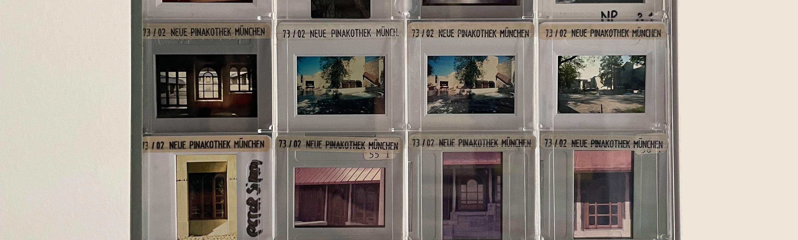
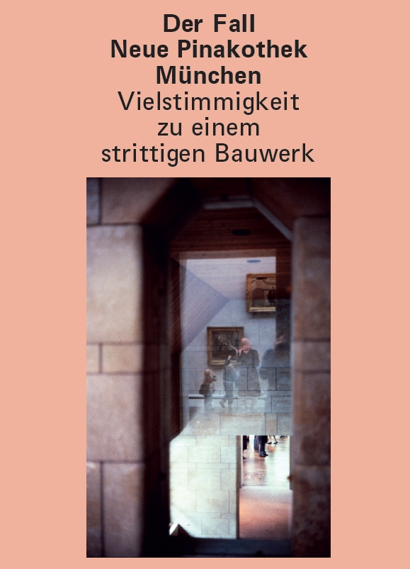

Die Eröffnung der Neuen Pinakothek in München 1981 löste in den Medien und unter Fachleuten zum Teil einen Sturm der Entrüstung aus. Die Vorwürfe bezüglich der Gestaltung des Bauwerks reichen von Unverständnis gegenüber einer vermeintlichen Ritterburg bis hin zu Vergleichen mit der Architektur des Nationalsozialismus.
Frank Seehausen führt uns zu Beginn mit seinem persönlichen Zugang durch die Bildwelt der Neuen Pinakothek aus dem privaten Nachlass der Familie von Branca. Angelika Schnell setzt sich in ihrem Text in einem größeren Maßstab mit dem Phänomen auseinander, warum die vorwiegend männlichen Architekten dieser Zeit, unter anderem auch Alexander von Branca, die Bezeichnung „postmodern“ von sich wiesen. Kirsten Angermann und Hans-Rudolf Meier gehen den Referenzen nach, die sie in dem Bauwerk verbaut sehen. Für diese Publikation hat Andreas Thuy sich mit der Baugeschichte und Korinna Zinovia Weber mit den Pressereaktionen auseinandergesetzt. Abschliessend wirft Andreas Putz einen Blick auf die Baustelle(n) ohne Denkmalschutz, denn auffälligerweise ist das Gebäude trotz seines Alters und Bedeutung noch nicht in die Denkmalliste Bayerns aufgenommen worden. Dieses Buch nähert sich aus verschiedenen Perspektiven einem der strittigsten Bauwerke Münchens und ebnet damit den Weg zu einer neuen Wertschätzung.
Haben Sie Interesse Ihr eigenes Buchprojekt zu verwirklichen? Gerne begleiten wir Sie dabei!
Lust auf eine Zusammenarbeit? Schreiben Sie eine Email an
kori.z.weber[at]gmail.com
Oder über LinkedIn